Clarice Lispector
Chaya Pinkhasivna Lispector , mais conhecida profissionalmente como Clarice Lispector, foi uma escritora e jornalista ucraniana de origem judaica russa, naturalizada brasileira e radicada no Brasil.
Autora de romances, contos e ensaios, é considerada uma das escritoras brasileiras mais importantes do século XX.
Sua obra está repleta de cenas cotidianas simples e tramas psicológicas, reputando-se como uma de suas principais características a epifania de personagens comuns em momentos do cotidiano.(Fonte)


 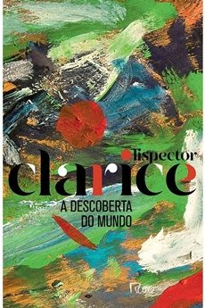
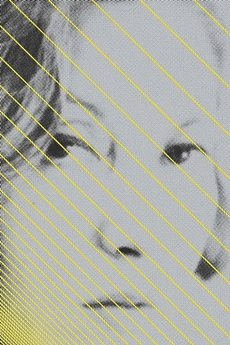 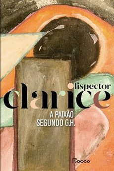 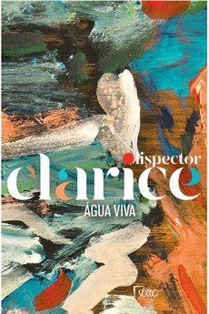
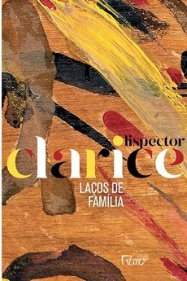
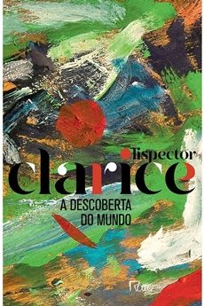
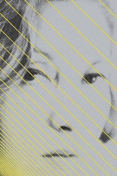 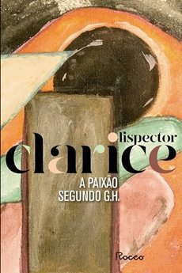 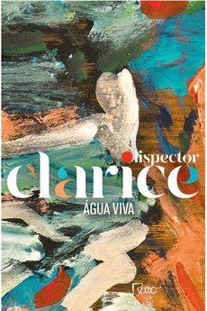
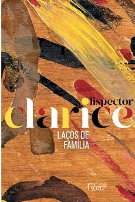
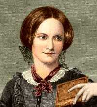
Charlotte Brontë
Charlotte Brontë foi uma das grandes romancistas da Inglaterra no século 19. Ela era a mais velha das três irmãs Brontë, cujos livros são importantes na literatura mundial. Charlotte nasceu em 1816, Embora sua produção literária tenha sido modesta, é significativa. Sua primeira obra, “The Green Dwarf, A Tale of the Perfect Tense”, foi escrita em 1833. Depois, ela continuou escrevendo até publicar “Jane Eyre” em 1847. “Shirley” foi escrita em 1849, e “Villette” em 1853. “O Professor”, seu primeiro romance, foi publicado postumamente em 1857, e “Emma”, que deixou inacabado, foi publicado em 1860.(Fonte)


 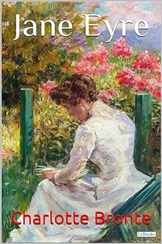
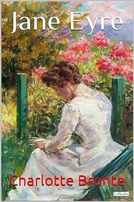